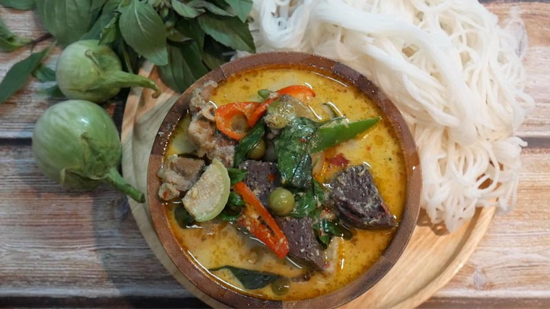

แบบฝีกหัด 2 : Basic HTML
ธราเทพ ปานเฉวง 6440011018
แกงเขียวหวานไก่

ส่วนผสม แกงเขียวหวานไก่
หัวกะทิ 500 กรัม
หางกะทิ 700 กรัม
เนื้อไก่ 600 กรัม
พริกแกงเผ็ด 2 ช้อนโต๊ะ
น้ำตาลปี๊บ 1+1/2 ช้อนโต๊ะ
น้ำปลา 5 ช้อนโต๊ะ
มะเขือพวง 70 กรัม (หรือแล้วแต่ชอบ)
มะเขือเปราะ 15 ลูก (หรือแล้วแต่ชอบ)
พริกชี้ฟ้าแดง+เขียว 2-3 เม็ด (หรือแล้วแต่ชอบ)
เลือดไก่ 1 ก้อน
ใบโหระพา 30 กรัม
วิธีทำ แกงเขียวหวานไก่
ผัดพริกแกง + ผัดเนื้อไก่
ตั้งกระทะใส่หัวกะทิประมาณ 300 กรัมลงไปเคี่ยวให้แตกมัน ใส่พริกแกงเขียวหวานกับพริกแกงเผ็ดลงไปผัดให้หอม
ปรับไฟเป็นไฟกลาง จากนั้นใส่เนื้อไก่ลงไปผัดให้เข้ากับพริกแกง จนเนื้อไก่พอสุก
ต้มแกงเขียวหวานไก่ + จัดเสิร์ฟ
เมื่อผัดเนื้อไก่จนเข้ากับพริกแกงแล้ว เติมหางกะทิลงไป รอจนกะทิเดือด จึงปรุงรสด้วยน้ำปลา และน้ำตาลปี๊บ คนให้ละลายเข้ากัน
ใส่ใบมะกรูด มะเขือเปราะ และมะเขือพวง ใส่มะเขือเปราะ ตามด้วยเลือดไก่ต้มลงไป
ตักแกงเขียวหวานไก่ใส่ชาม ตกแต่งด้วยใบโหระพาและพริกชี้ฟ้าแดง พร้อมรับประทาน
คุณค่าทางโภชนาการ ขนมจีนแกงเขียวหวานไก่
รายละเอียด
คุณค่าทางโภชนาการต่อหนึ่งหน่วยบริโภค
พลังงานทั้งหมด
506
ไขมันทั้งหมด
31%
ไขมันอิ่มตัว
79%
ไขมันไม่อิ่มตัวเชิงซ้อน
-
ไขมันไม่อิ่มตัวเชิงเดี่ยว
-
ไขมันทราน
-
คลอเรสเตอรอล
16%
โซเดียม
115%
โพแทสเซียม
12%
คาร์โบไฮเดรต
20%
โปรตีน
46%
Home